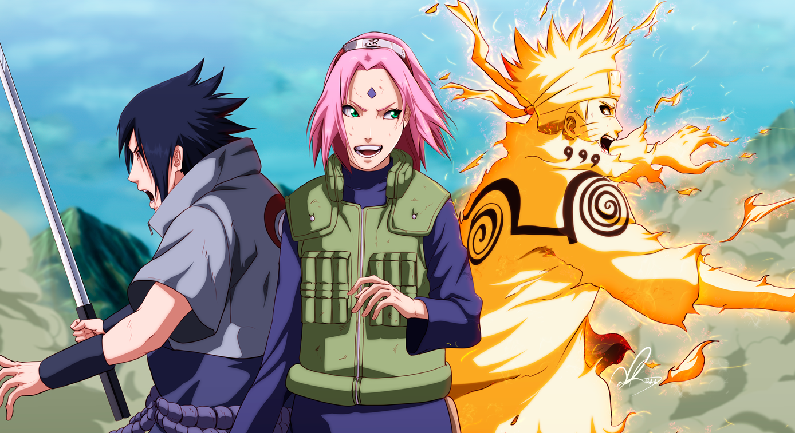
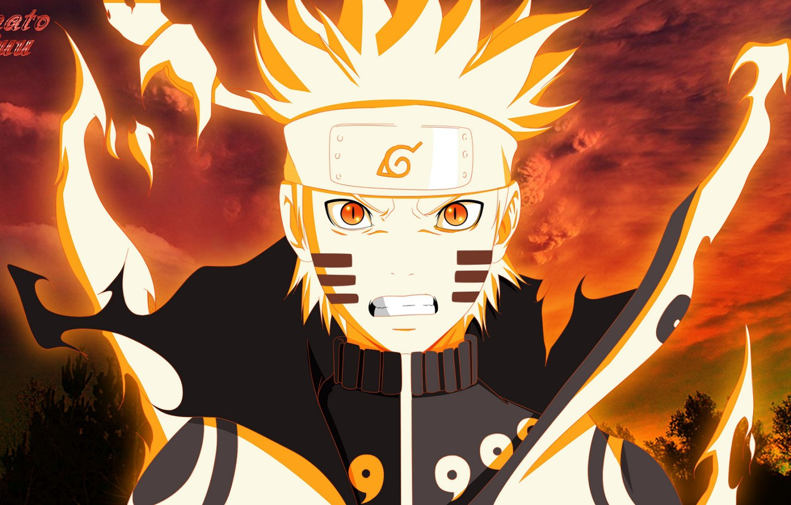
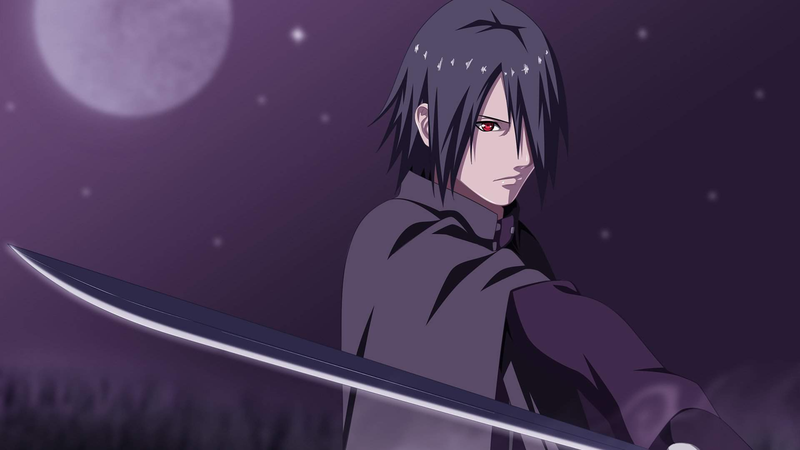
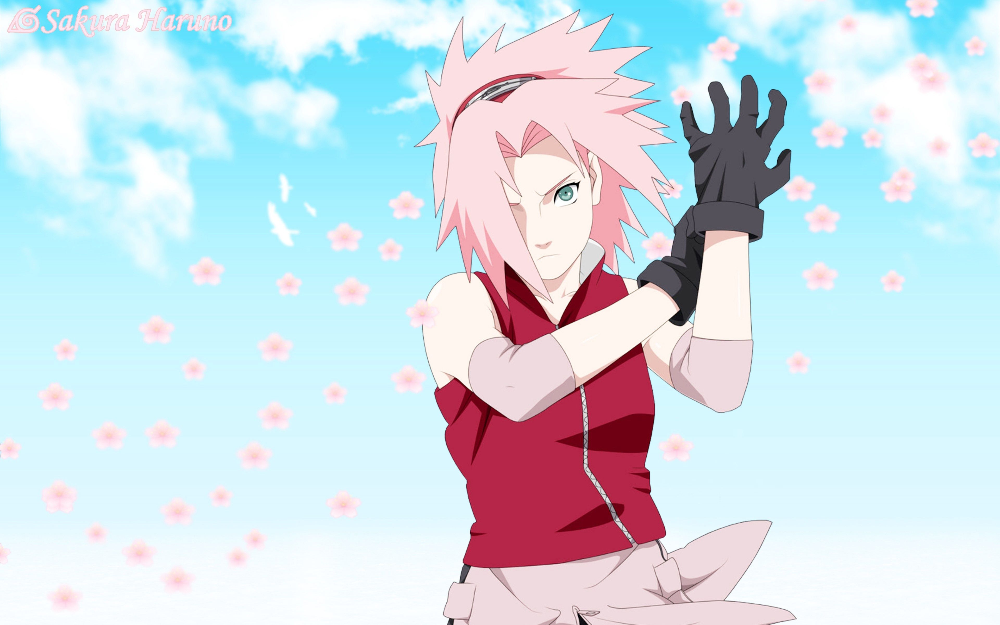

Sebuah Tim dengan kemampuan berbeda dalam satu kekompakan
Sejarah Team 7 Naruto

Tim Kakashi (カカシ班 Kakashi-Han) atau Tim 7 (第7班, 第七班 Dainanahan) adalah tim fiktif dalam serial manga dan anime Naruto. Diceritakan, tim ini adalah tim yang terbentuk setelah Naruto, Sakura,
dan Sasuke lulus genin.
Diceritakan, tim ini dibentuk setelah Naruto, Sakura, dan Sasuke lulus genin di asuhan Kakashi.
Setelah kepergian Sasuke, tim ini berkurang satu anggota. Dan juga, setelah menyelamatkan Gaara, sang kazekage, kakashi tidak bisa bertugas dan digantikan Yamato.
Untuk mengisi tim satu orang lagi, maka dipilihlah Sai, seorang Anbu Root.
Anda telah menekan tombol sebanyak .. kali, Mohon tunggu!
Anggota Team 7
Team 7 terdiri dari beberapa anggota yang merupakan warga desa Konohagakure. Mareka dibentuk oleh akademi ninja Konohagakure
dalam upaya menciptakan elite ninja yang siap siaga dalam menghadapi perang ataupun situasi genting lainnya
Uzumaki Naruto

Dua belas tahun sebelum Naruto lulus dari akademi ninja, monster yang berbentuk rubah berekor sembilan, Kyuubi, meneror desa Konohagakure.
Minato Namikaze (ayah Naruto) yang bergelar Hokage ke-4 yang saat itu memimpin desa Konoha, mengurung dan menyegel si Rubah Ekor Sembilan ke dalam tubuh Naruto yang saat itu masih bayi.
Tak lama kemudian, Hokage ke-4 tewas setelah melakukan ritual penyegelan itu. Dengan penyegelan yang dilakukannya, Hokage ke-4 berharap Naruto akan dipandang sebagai seorang pahlawan,
yang terpaksa ditumbalkan untuk mengurung monster itu.
Naruto hidup sendiri sejak masih kecil. Dia tumbuh tanpa kasih sayang orang tua dan perhatian orang di sekitarnya. Karena itu, ia berusaha untuk mencari perhatian orang-orang di sekitarnya,
dengan cara melakukan perbuatan yang tidak baik dan melanggar norma. Karena terus-menerus dijauhi, Naruto berjanji untuk mewujudkan mimpinya
untuk menjadi Hokage, yaitu gelar untuk pemimpin di desanya. Sebuah mimpi yang sangat sulit untuk diwujudkannya,
terutama karena tak ada satu orang pun yang membantu dan mendukungnya untuk mewujudkan mimpinya, sampai ia bertemu dengan Iruka Umino,
yang kemudian menjadi guru pembimbingnya
Rasenggan, Kagebunshin No Jutsu, Ranshen Shuriken
Uchiha Sasuke

Dalam seri Naruto, Sasuke adalah adik dari Itachi. Itachi merupakan anak pertama dari Kepala Pasukan Keamanan yang dihormati
seluruh desa sebagai jenius karena menyelesaikan pendidikan sebagai genin pada usia 7 tahun, menguasai Sharingan pada usia
8 tahun, lulus ujian Chuunin pada usia 10 tahun, dan menjadi kepala pasukan Anbu pada usia 13 tahun.
Klan Uchiha menghormati Itachi dan memberi harapan penuh kepadanya sebagai penghubung antara desa dan klan.
Ayah Sasuke, Fugaku Uchiha memberikan perhatian lebih kepada Itachi, sehingga membuat Sasuke iri kepada kakaknya
Setelah kejadian antara Itachi dan beberapa anggota klan Uchiha lainnya, hubungan antara ayah Sasuke dan Itachi
menjadi sedikit renggang. Itachi menjadi lebih menakutkan dan mempertanyakan keberadaan dirinya sebagai "wadah" (utsuwa) klan.
Selama waktu itu, ayah Sasuke kemudian mengajari Sasuke sebuah jurus berelemen api, yaitu Goukakyuu no Jutsu. Sasuke dapat
menguasai jurus tersebut dalam waktu satu minggu, membuat ayahnya terkejut dan akhirnya mengakui Sasuke sebagai anggota klan
Uchiha yang sebenarnya. Ayah Sasuke juga memperingatkan agar kelak Sasuke tidak mengikuti jejak kakaknya
Chidori, Chidori Nagashi, Susano'o, Rhinegan
Sakura Haruno

Sakura Haruno lahir dari pasangan Kizashi Haruno dan Mebuki Haruno. Sakura Haruno adalah seorang kunoichi (ninja wanita) yang
tergabung dalam Tim 7 bersama Naruto Uzumaki dan Sasuke Uchiha di bawah bimbingan Kakashi Hatake. Dia sangat menyukai Sasuke
sehingga dia sangat senang ketika tahu bahwa dia dan Sasuke tergabung dalam Tim 7, tetapi dia sangat menyayangkan Naruto yang
masuk dalam tim tersebut. Karena dia tidak begitu suka dengan Naruto yang ternyata menyukai dirinya. Ketika Sasuke pergi
meninggalkan Konoha, Sakura mulai berusaha menjadi ninja yang hebat. Dia berguru kepada Tsunade dan akhirnya menjadi seorang
ninja medis yang andal.
Sakura adalah anak kesayangan guru-gurunya karena otaknya yang encer dan kemampuannya mengendalikan cakra dengan sempurna.
Keahlian ini bahkan melampaui rekan-rekannya, Sasuke Uchiha dan Naruto Uzumaki.
Selain mengendalikan cakra, Sakura juga memiliki kemampuan medis. Hokage ke-5, Tsunade, bahkan mengakui kemampuannya sejak
Sakura berguru selama seminggu padanya. Murid terakhirnya yang sebanding atau lebih kurang daripada Sakura hanya Shizune.
Sesuai permintaan Naruto untuk misi yang lebih menantang, Tim 7 ditugaskan untuk mengawal Tazuna ke Negara Gelombang.
Sepanjang jalan, mereka menemukan bahwa Tazuna memiliki pembunuh setelah dia dan membutuhkan perlindungan sementara ia selesai
membangun jembatan. Tazuna tidak punya cukup uang untuk membayar jasa pengawalan, dan berbohong kepada Tim 7 bahwa ia hanya
membutuhkan pengawalan. Meskipun kesulitan tugas ini Tim 7 tinggal di sisi Tazuna sampai jembatan itu selesai, berhasil
melindunginya dari Gato dan anak buahnya.
Menggunakan informasi yang diperoleh dari Sasori, Tim Kakashi baru (dipimpin oleh Yamato) pergi ke Kusagakure untuk bertemu
dengan mata-mata di jajaran Orochimaru. Meskipun berharap itu akan memberi mereka petunjuk mengenai lokasi Sasuke, Sai
memiliki misi rahasia untuk membunuh Sasuke. Setelah infiltrasi persembunyian untuk mengambil Sasuke, pertarungan terjadi
kemudian dan Sasuke pergi dengan Kabuto dan Orochimaru
Sebagai bagian dari Eight Man Squad, Tim Kakashi mulai misi untuk menangkap nuke-nin yaitu Itachi Uchiha. Hal ini mebuat
skuat untuk berpisah dan mencari daerah untuk tanda Itachi. Namun, setelah melihat ledakan bunuh diri Deidara,
tim bergabung kembali, dengan Kiba menemukan aroma Sasuke. Dengan Sasuke begitu dekat, misi utama skuat menemukan Itachi
digantikan dengan menemukan Sasuke sebagai gantinya. Sementara sedang terhenti oleh Akatsuki anggota Tobi, tim mengetahui
bahwa Itachi telah tewas dalam pertempuran dengan Sasuke. Mereka mencoba untuk mencapai Sasuke sebelum Tobi mencapainya,
tetapi gagal dan tidak dapat menemukan kembali jejak Sasuke